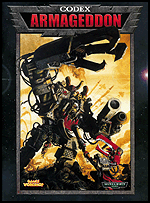
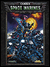
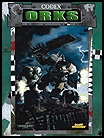
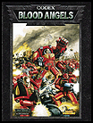
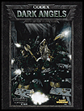
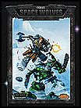
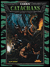
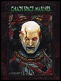
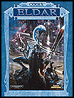

|  | |
|
A world is torn apart by the largest Ork invasion in Imperial history. Arrayed against this mighty Ork horde is the greatest gathering of Imperium might since the time of Lord Solar Macharius. The fate of a hundred worlds will be decided on the blood-soaked ash dunes of Armageddon, and we want you to take part in this historic battle! This Codex contains four army lists: Ork Speed Freeks, Armageddon Steel Legion Imperial Guard, Black Templars, and Salamanders Space Marine Chapters, plus the complete battle-scarrred history of Armageddon. Read about the past, then get involved with the on-line campaign and help write the future of Armageddon! This book is a supplement to the Space Marine, Ork, and Imperial Guard Codices. |
|  |
|
 |
|
The Space Marines are the finest troops in the Imperium. Their genetically engineered bodies have been honed far in advance of any human, and their battle skills are second to none. Combined with the best wargear mankind can offer and a lifespan lasting hundreds of years, these champions of the Imperium are feared and respected throughout the universe. |
The Imperial Guard is the largest and most diverse fighting force in the galaxy, fighting across a hundred warzones upon ten thousand planets. Moving into battle with the weight of numbers and massive artillery on their side, not much can stand up to the imperial war machine! Famous for their disciplined troops and devastating battle tanks, the Imperial Guard forms the mainstay of the Imperium's standing army. |
WAAAGH! The Orks are the most brutal race in the Warhammer 40,000 universe. Across a thousand worlds the deafening cries of battle-crazed Ork warriors ring out. From the unstoppable Warlords to the lowliest Gretchin, this Codex details everything an inspiring Ork Boss needs to know to take the galaxy by storm in a tide of green death! |
|  |
The Blood Angels are the most bloodthirsty of all the Space Marine Chapters, unstoppable in their fury and infamous in their quest to spill blood in the name of the Emperor. Even the Dreadnoughts of this Chapter reflect the Blood Angels' lust to get into grips with the enemy. Supplement to the Space Marine Codex. |
 |
The Dark Angels are stubborn and relentless champions of the Imperium, faithful but with a terrible secret. They are also masters of the fast attack vehicle, hitting fast and hard with Ravenwing companies. This Codex reveals some of the dark history of one of the most mysterious Space Marine Chapters. Supplement to the Space Marine Codex. |
|
|  |
The ferocious warriors of the Space Wolves are famous throughout the Imperium for their bravery and willingness to fight no matter the odds. Although unorthodox in their battle tactics and army composition, the Space Wolves serve the Emperor well! Supplement to the Space Marine Codex. |
 |
Catachan is the most famous deathworld in the galaxy. If hunting your adversaries with booby traps and ambushes or incinerating your foes with heavy flamers and demolition charges appeals to you, this Codex is ideal. Inside is a wealth of background information and scenarios for desperate jungle and deathworld fighting. Supplement to the Imperial Guard Codex. |

|
Spawned in the darkest pit of the universe, the cruel Dark Eldar are a curse upon all races of the galaxy. For untold years they have preyed upon unsuspecting settlements, stealing forth from the shadows on their raids of terror; massacring or enslaving all whose paths they cross. This Codex reveals the darkest secrets of these sadistic killers, with the advice on how best to begin your own reign of terror across the universe. |
 |
The Legions of Chaos are twisted renegades and traitors, sworn to overthrow the Emperor and mankind whom they once served. The armies of the damned boast mighty Daemons, crazed berserkers, possessed vehicles, and squad upon squad of foul Chaos Space Marines, bound forever to destroy all in their path. Death to the False emperor! |
|  |
The Eldar are an ancient race, immersed in a battle for survival in a galaxy overrun by barbaric usurpers. Eldar warriors are as deadly as they are diverse, utilizing advanced weaponry and mysterious wargear. This Codex details everything you need to know to field an army of these proud, alien warriors. |

|
This Codex uncovers the details and specialized forces of the five major craftworlds - the Biel-Tan Swordwind army, Uthwe the Damned, the Saim-Hann Wild Rider host, the Iyandan Ghost Warrior army, and the Alaitoc Ranger force. Each variant includes alterations to the army's organisation along with special rules and new unit types. Supplement to the Eldar Codex. |